|
Simple Shape Tutorial
The following tutorial will walk you through setting up
a very simple shape in Maya and exporting it for use in the Torque Game Engine.
Please note that this is not a Maya how-to. For more information on the general
use of Maya, refer to the help files that are included with the Maya installation.
Keep in mind that this tutorial is designed to introduce
you to the basic tools and techniques used to setup and export shapes for the
Torque Game Engine. It is not designed to show you how to get a shape working
in your game. Characters, vehicles, and weapons are obviously more complex
than the simple shape in this tutorial and will require very specific types
of objects and naming conventions in order to function properly. Please refer
to appropriate sections in this document for more information.
The File Pack contains
files that you may use during these tutorials. simpleShapeBase.mb, simpleShapeDetails.mb, simpleShapeCollisions.mb are
the finished versions of the Maya scene files that are ready for export. simpleShapeAnimation.mb contains
an animated object that is ready to be set up for export. simpleTexture.png is
the texture for all scene files.
Project Setup
Set up a new project workspace for this tutorial.
This tutorial will assume the following settings:
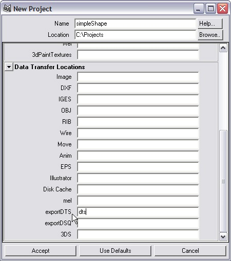
All other fields should be left blank.
Copy simpleTexture.png from the file pack and put it in the main project directory.
Based on the settings provided above, the main project directory for this tutorial
is C:\Projects\simpleShape.
Custom exportDTS and exportDSQ locations can be set in the Export
Settings dialog box.
Create simpleShape
1. Begin by creating a polygon sphere (Create > Polygon
Primitives > Sphere).
2. In the Channel box, rename the sphere to simpleShape2.
The 2 is
the detail resolution for the shape.
3. Set translateY to 1 to
make it rest on the home grid.
4. In the Inputs section of the Channel Box, select polySphere1 to
bring up the sphere's attributes. Set its subdivisionsAxis and subdivisionsHeight to 16.
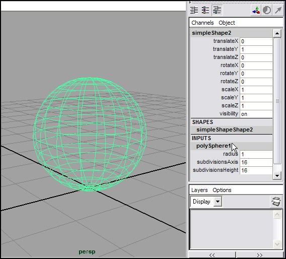
5. All meshes
need to be triangulated in order to export. Switch to the Modeling menu set
(F3 on the keyboard). With simpleShape2 still
selected, go to Polygons > Triangulate.
Deselect and re-select simpleShape2 to
clear the face selection.
6. Press 6 on the keyboard to view the model in shaded mode.
Press 4 to view as wireframe again.
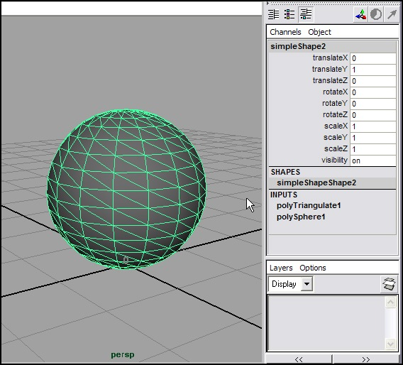
Create a Material for simpleShape
1. Open HyperShade (Window > Rendering
Editors > HyperShade).
2. In the Create Bar on the left, select Lambert. lambert2 is
created in Materials section.
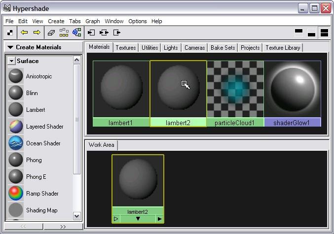
3. Double-click lambert2 to
open its Attribute Editor.
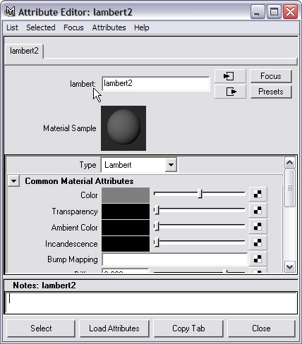
4. Rename the material simpleTexture.
5. In the Common Material Attributes section, click the
checkered box to the right of the Color attribute to bring up the Create Render
Node window.
6. Click the File button
in the 2D Textures section. The file node's attributes are now displayed in
the Attribute Editor.
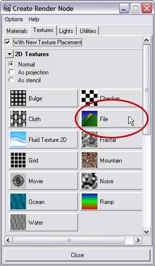
7. Click the folder icon to the right of the Image
Name field.
8. In the file dialog, set the Files
of Type dropdown
menu to Best Guess.
Then choose simpleTexture.png from
the file dialog.
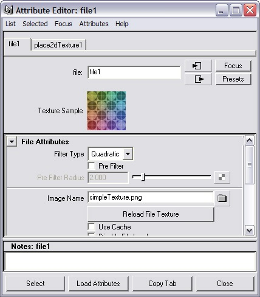
9. Close the Attribute Editor.
10. Middle-mouse drag simpleTexture from
HyperShade onto simpleShape2 to apply
the material.
11. Close HyperShade.
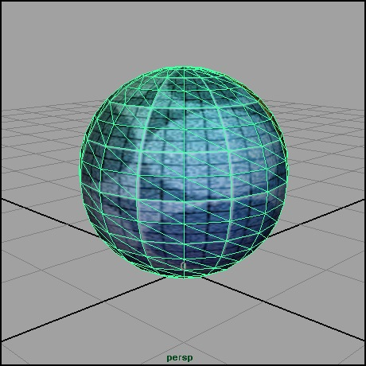
12. Save the scene file as simpleShapeBase.mb.
Export simpleShape
1. Open the dtsUtility window.
2. Click the Create Bounding
Box button. This creates
a cube named bounds that
will serve as the bounding box. The bounding box needs to encompass the entire
shape, so set its scale attributes to 2. Check the Lock checkbox so that the
bounding box does not obscure simpleShape2.
3. Make sure simpleShape2 is
selected. Click the Embed Shape button. Then click the Register
Details button.
4. Open HyperGraph (Window > HyperGraph).
What you see should look like this:
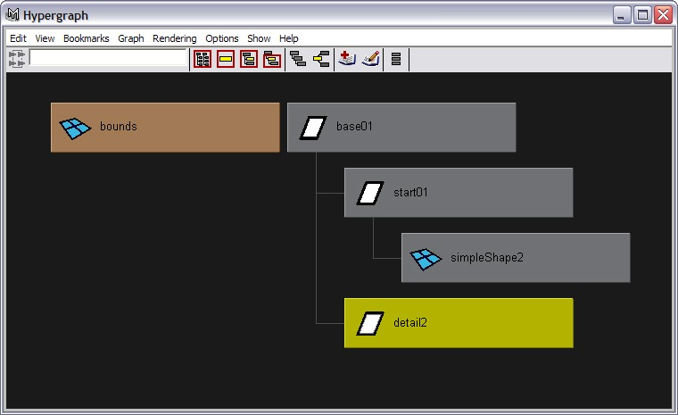
The Embed Shape button created a hierarchy for your shape which will allow
it to export. The Register Details button created a detail marker that matches
the detail resolution on simpleShape2. The detail marker tells the exporter
that there is a detail mesh that should be exported.
The base and start shapes and the detail marker can
be created manually as well by creating empty groups (Create > Empty Group)
then renaming and parenting them accordingly.
You are now ready to export the shape.
5. In the dtsUtilty window, press the Export button.
6. In the file dialog, set Files
of Type to exportDTS.
Name the file simpleShapeBase.dts.
If your project is set up properly, the file will be saved to the dts directory
inside the main project workspace directory (C:\Projects\simpleShape\dts).
Click Export to save the dts file.
7. Save the scene file.
simpleShape with Detail Levels
Continue working with simpleShapeBase.mb from the previous section.
1. Select simpleShape2.
Rename it to simpleShape128.
2. Open the Duplicate options box (Edit > Duplicate
options box).
3. Check Duplicate Input
Graph. Click the
Duplicate button to make a copy of simpleShape128with inputs.
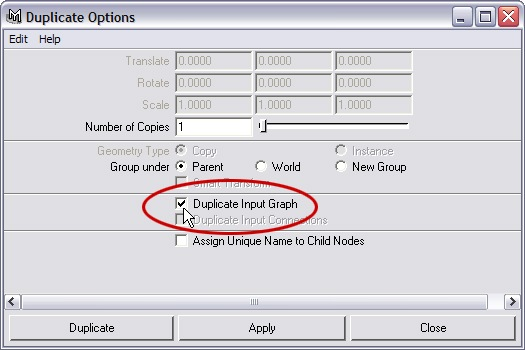
4. Rename simpleShape129 to simpleShape64.
Change its subdivisionsAxis and subdivisionsHeight to 8.
5. Duplicate this shape, and rename the new shape to simpleShape2.
Change its
subdivisionsAxis and subdivisionsHeight to 4.
6. Select simpleShape128 and simpleShape64.
Press the Register Details button in the
dtsUtility window.
7. Select simpleShape64 and simpleShape2.
Unparent them from the main hierarchy (Edit > Unparent).
8. Open HyperGraph. What you see should look like this:
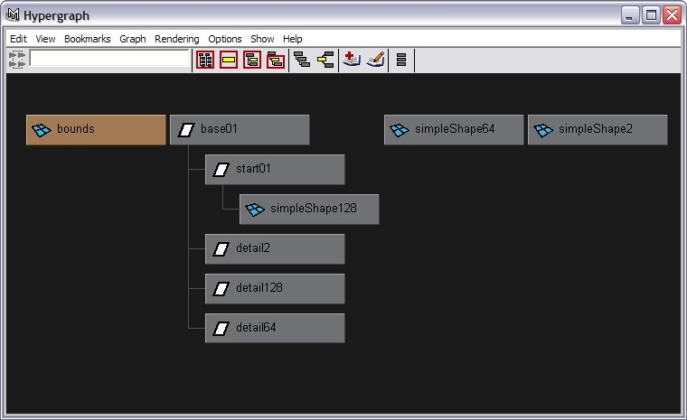
9. Save the scene as simpleShapeDetails.mb.
10. Export this as simpleShapeDetails.dts.
|